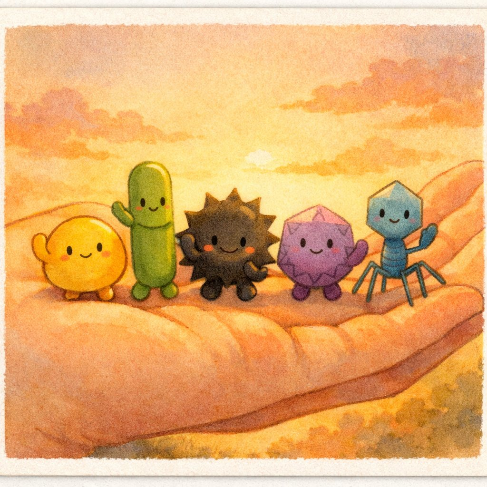
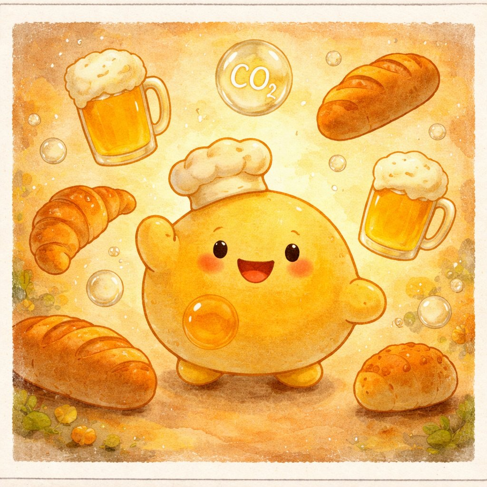
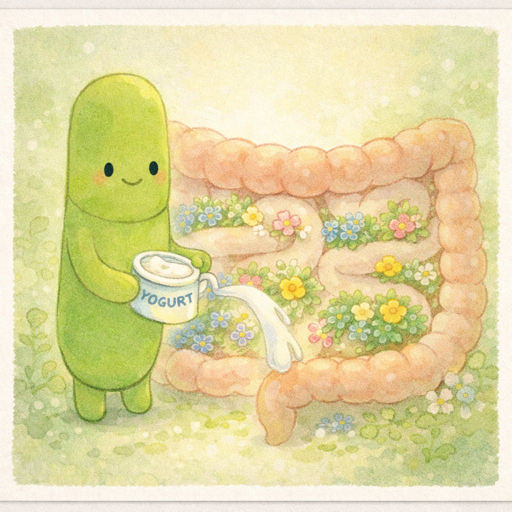
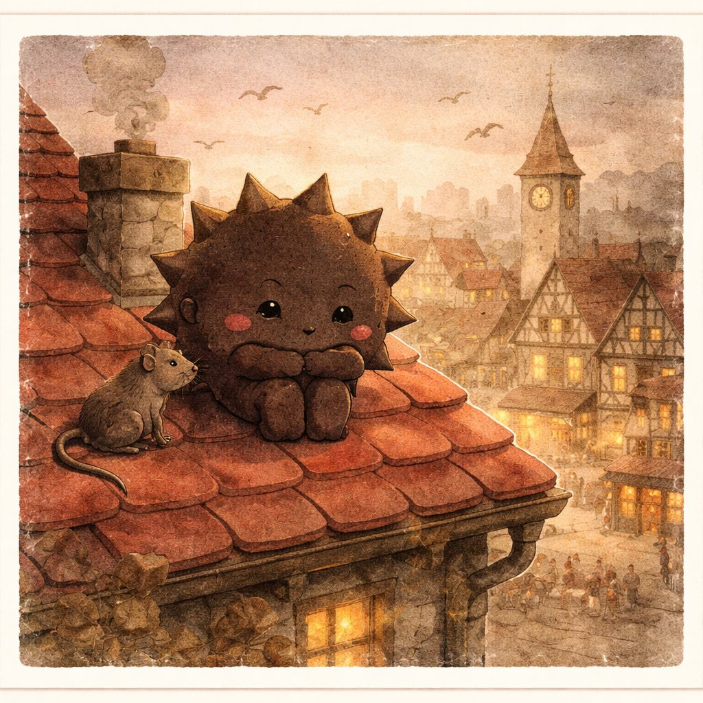
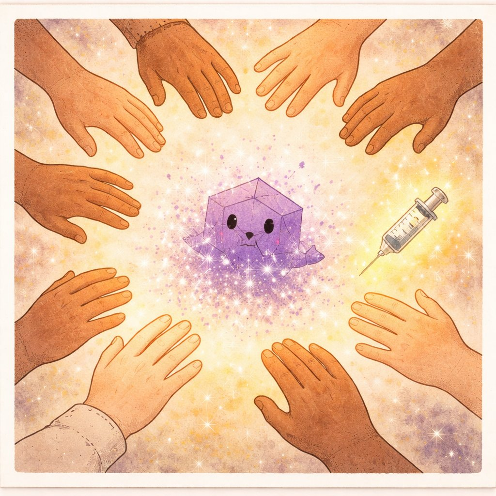
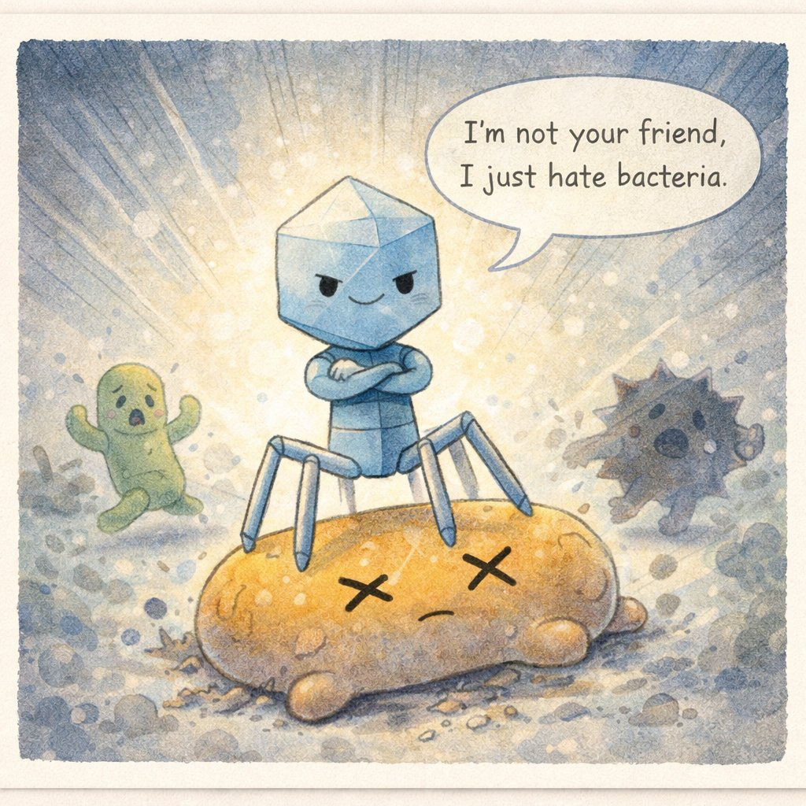

きみの からだの なかには、きみの細胞とおなじくらいの数の微生物がすんでいる。
おなかの なかにも、てのひらにも、まつげの ねっこにも。
あるものは パンを ふくらませ、
あるものは おなかを まもり、
あるものは まちを ほろぼした。
これは、目にみえない ちいさなものたちと
にんげんの、ながい ながい おつきあいの おはなし。
↑ もし 細菌が ソフトボールなら、ウイルスは ビー玉。酵母は バランスボール。
1
サッちゃんは 酵母（イースト）。
細胞のなかに 核（かく）をもつ、カビやキノコの なかま — 「真菌」だ。
サッちゃんの とくぎは「発酵（はっこう）」。
おさとう（糖）を たべて、アルコールと 二酸化炭素（CO₂）を だす。
この CO₂ が パンを ふくらませ、アルコールが ビールや ワインになる。
酵母は 人類が「飼いならした」最初の微生物。パン、ビール、ワイン、日本酒、味噌、醤油 — 発酵食品の ほとんどに 酵母が かかわっている。
さらに現代では、インスリンやワクチンを酵母に作らせる「バイオ工場」としても 大活躍。

ラクトさんは 乳酸菌 — 細菌（バクテリア）の なかま。
酵母とちがって 核膜をもたない「原核生物」。もっと ちいさくて、もっと シンプル。
ラクトさんの とくぎは「乳酸発酵」。
糖を たべて 乳酸を だす。この酸が まわりを すっぱくして、
腐敗菌（くされ きん）を よせつけない。
ヨーグルト、チーズ、ぬか漬け、キムチ — みんな ラクトさんの おかげ。
人間の 腸内には 約1000種・数十兆個の 細菌が すんでいる。
「腸内フローラ」と よばれる この 生態系は、
消化をたすけ、ビタミンを つくり、免疫を きたえている。
ラクトさんは その なかでも とくに 頼れる 住人だ。
でも、細菌には ふたつの顔がある。
つぎの ページで、もうひとりの 「きん」に あおう。

ペス太は ペスト菌 — 人類史上 もっとも 多くの 命を うばった 細菌のひとつ。
ノミ → ネズミ → 人間 の ルートで ひろがった。
黒死病は ただの 災厄ではなかった。
労働者が へって 農民の 立場が つよくなり、封建制が くずれた。
「死を みつめることで 生を えがこう」という 気運が ルネサンス芸術を うんだ。
公衆衛生という 概念も、ペストとの たたかいから うまれた。
さいやくの てきが、にんげんの せかいを つくりかえた。

テンネンは ウイルス。
細菌とも 酵母とも まったく ちがう。細胞を もたない。
タンパク質の からに 遺伝情報（DNA か RNA）を つめただけの、
「いきもの」と よべるかも わからない そんざい。
自分では ふえられない。エネルギーも つくれない。
だから 人間の 細胞に もぐりこんで、その「工場」を のっとり、
じぶんの コピーを 大量生産する。究極の フリーライダー。
天然痘の 根絶は、人類全体が ひとつの てきに 協力して 勝った 唯一の 物語。
国境も イデオロギーも こえて、冷戦中の アメリカと ソ連が 協力した。
この せいこうが、ポリオや はしかの 撲滅キャンペーンの モデルになった。

ファージ先輩も ウイルス。でも テンネンとは ターゲットが ちがう。
細菌だけを おそう。人間の 細胞には てを ださない。
いま、抗生物質が きかない「耐性菌」が せかいじゅうで ふえている。
そこで 注目されているのが、ファージ療法 —
ファージ先輩に 耐性菌を たおしてもらう ちりょうほう だ。
ファージは 地球上に 10の31乗 いると いわれている。
すべての 生物を あわせた かずより おおい。
海の なかでは 毎日、ファージが 細菌の 40% を たおしている。
この 見えない たたかいが、地球の 生態系を ささえている。
サッちゃんに おそわったこと — 「なかよくすれば、おいしい」。
ラクトさんに おそわったこと — 「まもってくれる きんも いる」。
ペス太に おそわったこと — 「さいやくが、せかいを つくりかえる」。
テンネンに おそわったこと — 「ちからを あわせれば、かてる」。
ファージ先輩に おそわったこと — 「てきの てきは、みかた」。
① 共生 — 酵母や 乳酸菌のように、うまく つきあえば お互いに いいことがある。
② 衛生 — 手洗い・ワクチン・抗生物質。ペストや 天然痘から まなんだ 防御術。
③ 畏敬 — 微生物は 地球の 先輩。38億年 まえから ここに いる。にんげんは たかだか 30万年。
めに みえないからって、いないわけじゃない。
みえないものと、どう つきあうか。
それが、にんげんの ちえ なんだ。